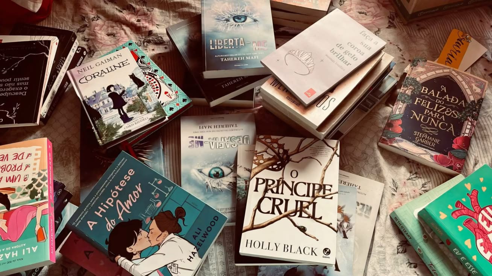

Além dos livros
Curiosidades do mundo dos livros
Descubra fatos interessantes sobre livros, autores e o universo da leitura.
APRENDA COM
Além dos livros
Descubra fatos interessantes sobre livros, autores e o universo da leitura.

Livros que atravessam gerações · melhores livros
Você sabia?
Um dos exemplares mais caros já vendidos foi o Codex Leicester, de Leonardo da Vinci, comprado por Bill Gates por mais de 30 milões de dólares.
Muitas palavras e expressões do inglês são atribuídas às obras de William Shakespeare e continuam presentes no idioma séculos depois.
Algumas companhias e projetos de viagem já criaram pequenas bibliotecas ou sistemas de empréstimo de livros para passageiros lerem durante os voos.